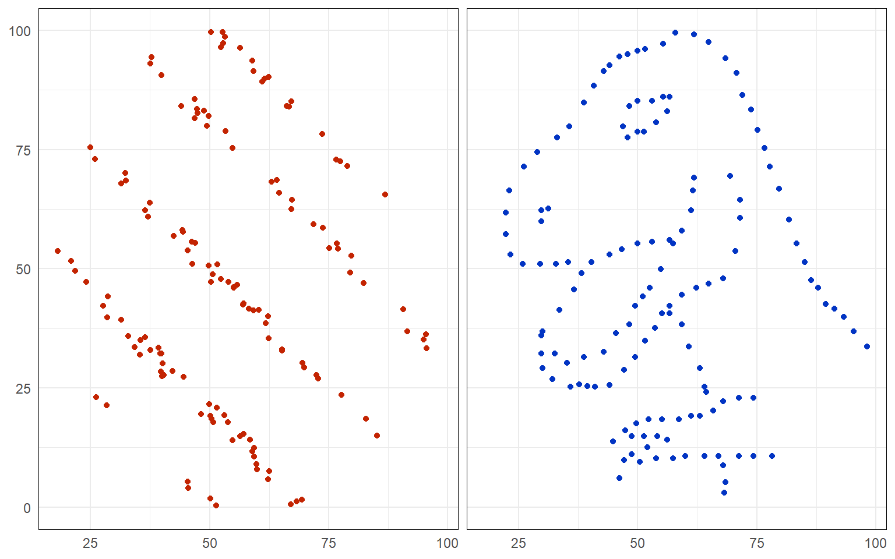
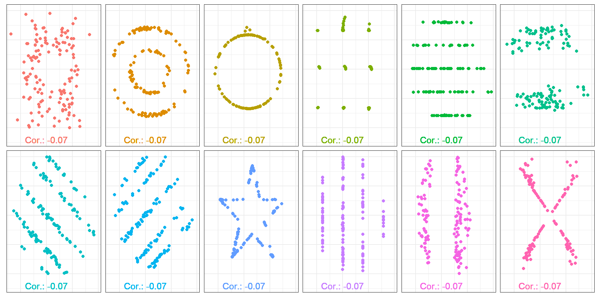
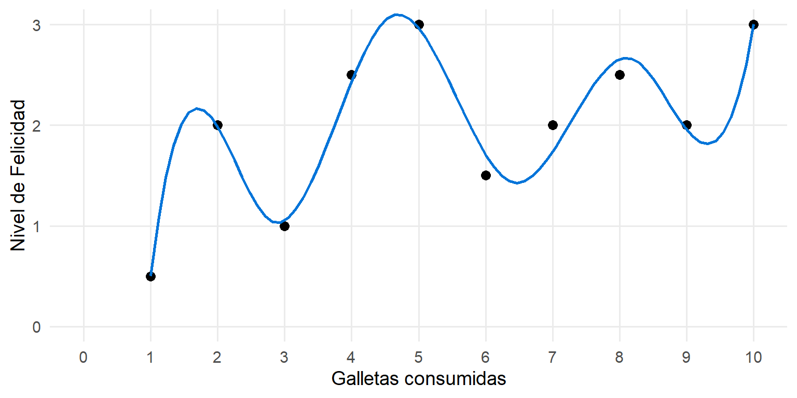
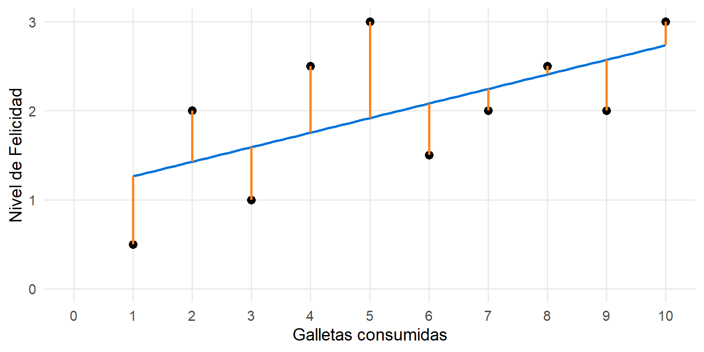
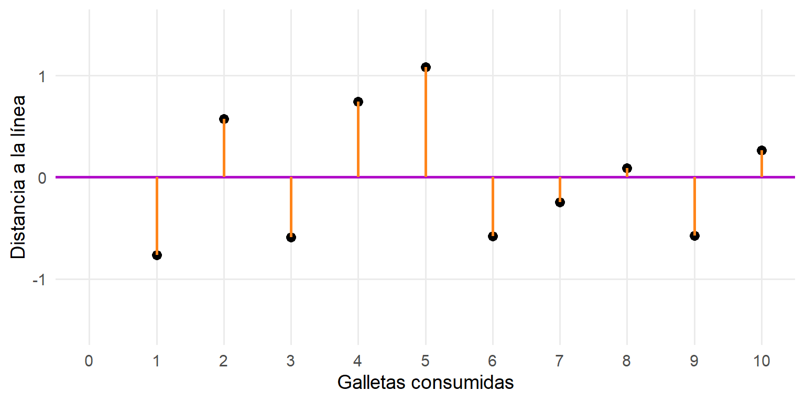
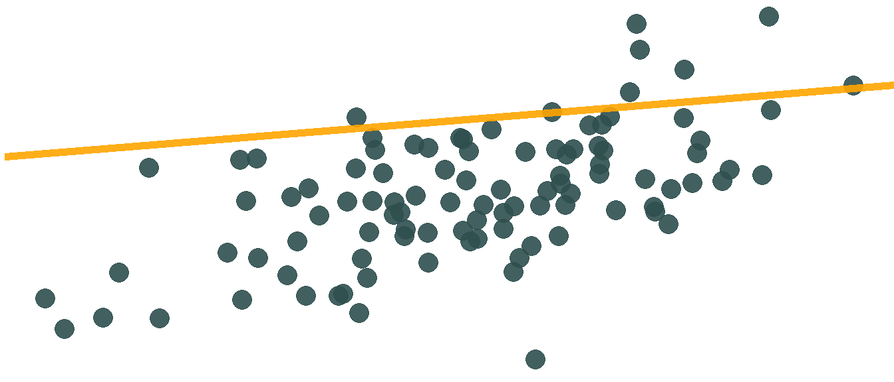
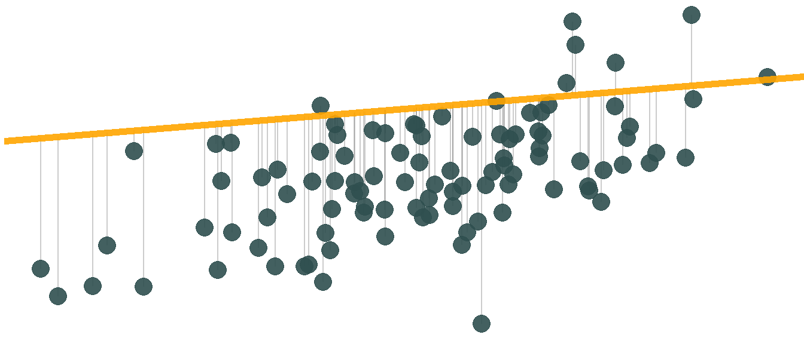
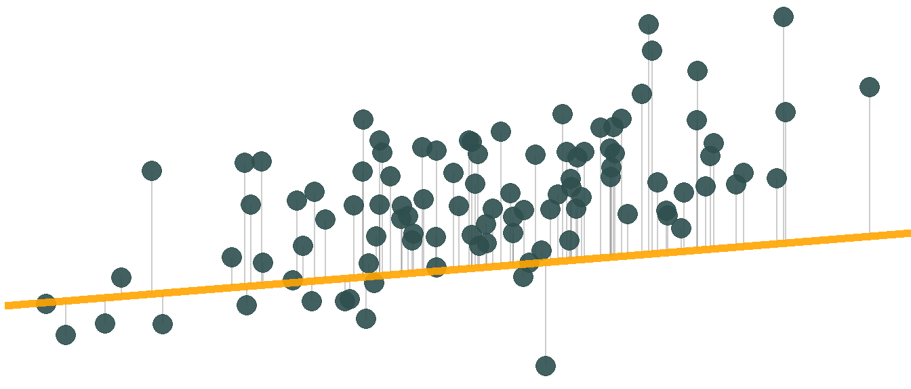
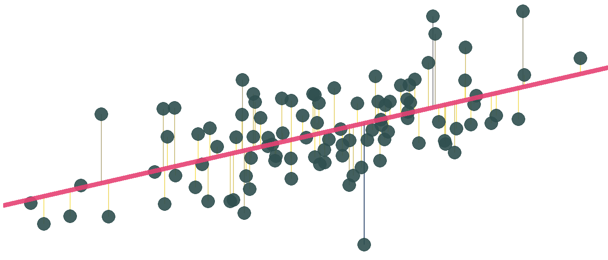

| Obs. | X | Y | X | Y | X | Y | X | Y |
|---|---|---|---|---|---|---|---|---|
| 1 | 10.00 | 8.04 | 10.00 | 9.14 | 10.00 | 7.46 | 8.00 | 6.58 |
| 2 | 8.00 | 6.95 | 8.00 | 8.14 | 8.00 | 6.77 | 8.00 | 5.76 |
| 3 | 13.00 | 7.58 | 13.00 | 8.74 | 13.00 | 12.74 | 8.00 | 7.71 |
| 4 | 9.00 | 8.81 | 9.00 | 8.77 | 9.00 | 7.11 | 8.00 | 8.84 |
| 5 | 11.00 | 8.33 | 11.00 | 9.26 | 11.00 | 7.81 | 8.00 | 8.47 |
| 6 | 14.00 | 9.96 | 14.00 | 8.10 | 14.00 | 8.84 | 8.00 | 7.04 |
| 7 | 6.00 | 7.24 | 6.00 | 6.13 | 6.00 | 6.08 | 8.00 | 5.25 |
| 8 | 4.00 | 4.26 | 4.00 | 3.10 | 4.00 | 5.39 | 19.00 | 12.50 |
| 9 | 12.00 | 10.84 | 12.00 | 9.13 | 12.00 | 8.15 | 8.00 | 5.56 |
| 10 | 7.00 | 4.82 | 7.00 | 7.26 | 7.00 | 6.42 | 8.00 | 7.91 |
| 11 | 5.00 | 5.68 | 5.00 | 4.74 | 5.00 | 5.73 | 8.00 | 6.89 |
| Mean | 9.00 | 7.50 | 9.00 | 7.50 | 9.00 | 7.50 | 9.00 | 7.50 |
| SD | 3.32 | 2.03 | 3.32 | 2.03 | 3.32 | 2.03 | 3.32 | 2.03 |
| Corr | 0.82 | NA | 0.82 | NA | 0.82 | NA | 0.82 | NA |
Analítica de los Negocios
Intro a la Regresión Lineal
Carlos Cardona Andrade
Plan para hoy
Visualizar los Datos
¿Por qué es importante graficar los datos?
¿Por qué es importante graficar los datos?
Podemos utilizar un diagrama de dispersión para realizar un primer análisis de la relación entre dos variables
El coeficiente de correlación (lineal) es utilizado para medir la fuerza de la asociación (lineal) entre dos variables
La correlación entre el recaudo en US y el recaudo el primer fin de semana:
Cuarteto de Anscombe
¿Qué aprendemos cuando graficamos los datos?

¿Ven correlación acá?
Correlación: -0.07
Correlación: -0.07
Iguales pero diferentes
¿Por qué es importante graficar los datos?
- Visualización de patrones: Los gráficos permiten identificar tendencias, patrones y relaciones entre variables que pueden no ser evidentes solo con los números
Análisis visual vs. numérico: Aunque las estadísticas (media, desviación estándar, correlación) pueden ser iguales entre los conjuntos de datos, los gráficos muestran que los datos pueden comportarse de manera muy diferente
- Ejemplo: Cuarteto de Ascombe
- En conclusión, la visualización de datos no solo facilita la comprensión de la información, sino que también ayuda a evitar interpretaciones erróneas basadas únicamente en estadísticas numéricas
Ejercicio 1
Carguen el paquete
tidyverse,janitorycorrplota R.Ejecuten el siguiente código para importar los datos del caso Hollywood Rules:
- Limpiemos los nombres con el paquete
janitorpara que sean legibles:
Ejercicio 1
Creen un nuevo conjunto de datos que se llame
hollywood_subque sólo contenga las variables de recaudo en USA, el recaudo en el estreno, el recaudo en el mercado internacional y el presupuesto en ese ordenGrafiquemos la matriz de correlación con el siguiente código:
# Matriz de correlaciones
cor_matrix <- cor(hollywood_sub)
# Renombrar columnas y filas en la matriz
colnames(cor_matrix) <- c("US Gross", "Opening Gross", "Non-US Gross", "Budget")
rownames(cor_matrix) <- c("US Gross", "Opening Gross", "Non-US Gross", "Budget")
# Crear el gráfico de correlaciones
corrplot(cor_matrix, method = "number", type = "upper")Ejercicio 1
Analicen las dos variables que tengan la correlación más alta y las que tengan la correlación más baja.
Creen el gráfico de dispersión entre el recaudo total y el recaudo en el día del estreno como en la diapositiva 1. ¿Es consistente el gráfico con el valor de la correlación?
Regresión Lineal Simple
¿Por qué una regresión?
Ejemplo
El promedio en la universidad es resultado de la habilidad y las horas estudiadas. Por lo tanto, uno podría pensar en el siguiente modelo:
\[Promedio=f(H,Saber11,PCA)\] Donde \(H\) es la habilidad, \(Saber11\) es el puntaje en la prueba Saber 11 y \(PCA\) es el porcentaje de clases a las que el estudiante fue. Esperamos que el \(Promedio\) aumente cada que alguna de esas 3 variables aumente.
Sin embargo, no necesitamos esperar. Podemos evaluar esta hipótesis usando un modelo de regresión!
¿Por qué una regresión?
Modelo de Regresión:
\[Promedio_i=\beta_0 + \beta_1H_i + \beta_2Saber11_i+\beta_3PCT_i+\varepsilon_i\] Queremos estimar/evaluar la relación \[Promedio=f(H,Saber11,PCA)\]
Preguntas a responder:
¿Cómo se interpretan \(\beta_0\), \(\beta_1\), \(\beta_2\) y \(\beta_3\)?
¿Son los términos \(\beta_k\) parámetros o son estimaciones muestrales?
¿Qué es \(\varepsilon_i\)?
Partes esenciales de una regresión
\[y_i=\beta_0+\beta_1x_i+e_i\]
\(y\)
Variable dependiente
Variable resultado
Básicamente lo que queremos predecir o explicar
\(x\)
Variable explicativa
Predictor
Variable independiente
Lo que usamos para predecir o explicar \(y\)
Objetivos de una regresión
Usualmente ajustamos a una línea por dos razones:
Predicción
Predecir el futuro
Nos enfocamos en \(y\)
Netflix tratando de predecir la siguiente serie que veremos
Explicación
Explicar el efecto de \(x\) en \(y\)
Nos enfocamos en \(x\)
Netflix evaluando el efecto de la hora del día en la selección de una serie
¿Cómo se estima la línea de regresión?
Graficar ambas variables \(y\) y \(x\)
Dibujar una recta que se aproxime a la relación observada (ojalá funcione para datos que no están en la muestra)
Estimar los números que componen esa recta
Interpretar esos números
Galletas y Felicidad
| felicidad | galletas |
|---|---|
| 0.5 | 1 |
| 2.0 | 2 |
| 1.0 | 3 |
| 2.5 | 4 |
| 3.0 | 5 |
| 1.5 | 6 |
| 2.0 | 7 |
| 2.5 | 8 |
| 2.0 | 9 |
| 3.0 | 10 |
¿Cómo se relacionan las galletas con la felicidad?
Trazando una curva que sigue los datos
Otra línea que se adapta a los datos
Ajuste con una línea recta (Regresión lineal)
Errores de predicción
Visualización de los errores
Pendiente de una recta
\[ y = mx + b \]
\(y\) es un número
\(x\) es un número
\(m\) es la pendiente \(\frac{\Delta y}{\Delta x}\)
\(b\) es el intercepto con \(y\)
Pendiente de una recta: Ejemplos
\[ y = 2x - 1 \]
\[ y = -0.5x + 6 \]

Partes esenciales de una regresión II
\[ y = \beta_0 + \beta_1 x + \varepsilon \]
\(\beta_1\): la pendiente verdadera de la relación entre \(x\) y \(y\)
\(\beta_0\): el intercepto verdadero de la relación entre \(x\) y \(y\)
\(\varepsilon\): el error
Partes esenciales de una regresión II
\[ \hat{y} = \hat{\beta_0} + \hat{\beta_1} x \]
\(\hat{y}\): es la estimación de la variable dependiente dado nuestro modelo
\(\hat{\beta_1}\): la pendiente estimada de la relación entre \(x\) y \(y\)
\(\hat{\beta_0}\): el intercepto estimada de la relación entre \(x\) y \(y\)
No hay error!!!
- El símbolo gorro (\(\hat{\beta_k}\) o \(\hat{y}\)) significa que es una estimación y no un parámetro real
Modelo de Regresión
\[ \begin{aligned} y &= \color{#0074D9}{\text{Modelo}} + \color{#FF851B}{\text{Error}} \\ &= \color{#0074D9}{f(x)} + \color{#FF851B}{\varepsilon} \end{aligned} \]

Los errores
\[ \color{#FF851B}{\text{Error}} = \text{Observado} - \color{#0074D9}{\text{Predicho}} = y - \color{#0074D9}{\hat{y}} \]
La línea de los mínimos cuadrados ordinarios (MCO)
- El error para la observación \(i\) es:
\[e_i= \text{Observado} - \text{Predicho}=y_i - \hat{y_i}\] - La suma de los residuos al cuadrado es:
\[e_1^2+e_2^2+e_3^2+..+e_n^2\]
- La línea de los mínimos cuadrados ordinarios es la que minimiza la suma de los residuos al cuadrado:
\[ \min_{\hat{\beta}_0,\, \hat{\beta}_1} \sum e_i^2 \]
MCO vs Otras líneas
Volvamos a la relación felicidad y galletas
MCO vs Otras líneas
Para cualquier línea \(\hat{y}=\hat{\beta_0}+\hat{\beta_1}x\)
MCO vs Otras líneas
Para cualquier línea \(\hat{y}=\hat{\beta_0}+\hat{\beta_1}x\), podemos calcular \(e_i=y_i-\hat{y_i}\)
MCO vs Otras líneas
Para cualquier línea \(\hat{y}=\hat{\beta_0}+\hat{\beta_1}x\), podemos calcular \(e_i=y_i-\hat{y_i}\)
MCO vs Otras líneas
Para cualquier línea \(\hat{y}=\hat{\beta_0}+\hat{\beta_1}x\), podemos calcular \(e_i=y_i-\hat{y_i}\)
MCO vs Otras líneas
\(\sum e_i^2\) calcula el cuadrado de los errores: errores más grandes reciben una penalización mayor
MCO vs Otras líneas
La línea de MCO es la combinación de \(\hat{\beta_0}\) y \(\hat{\beta_1}\) que minimizan \(\sum e_i^2\)
¿Cómo gráficar la línea de regresión?
geom_smooth(method="lm")es la función dentro de ggplot para gráficar la línea de regresión y su respectivo intervalo de confianza.
¿Cómo gráficar la línea de regresión?
La opción se = FALSE elimina los intervalos de confianza.
Estimar una regresión en R
- La función
lm()estima una regresión lineal y la funciónsummary()reporta los resultados:
Modelando Galletas y Felicidad
Modelando Galletas y Felicidad
La función tidy nos permite ver los:
- coeficientes
- errores estándar
- el estadístico \(t\)
- el p-value
- los IC
Traduciendo los resultados a matemáticas
# A tibble: 2 2
term estimate
<chr> <dbl>
1 (Intercept) 1.1
2 galletas 0.164\[ \begin{aligned} &\widehat{Felicidad} = \\ &\hat{\beta_0}+\hat{\beta_1}\times Galletas \end{aligned} \]
\[ \begin{aligned} &\widehat{Felicidad} = \\ &1.1 + 0.16 \times Galletas \end{aligned} \]

Interpretación de los coeficientes
Un incremento en una unidad de \(X\) está asociado con un incremento (o reducción) promedio de \(\beta_1\) unidades en \(Y\)
\[\widehat{Felicidad}=\hat{\beta_0}+\hat{\beta_1}\times Galletas\]
\[\widehat{Felicidad} = 1.1 + 0.16 \times Galletas\]
En promedio, una galleta adicional está asociado a aumento en la felicidad de 0.16 unidades
Si no hay consumo de galletas, esperamos que el puntaje de felicidad sea 1.1 unidades
¿Es el intercepto importante?
La interpretación del intercepto es importante si en el contexto de los datos:
La variable independiente puede tomar valores iguales o cercanos a cero
La variable independiente tiene valores cercanos a cero en los datos observados
En caso contrario, el intercepto no tiene ninguna interpretación práctica
Veremos más ejemplos sobre esto más adelante
Ejercicio 2
Según la sabiduría popular en Hollywood, el recaudo durante el primer fin de semana es un fuerte predictor del éxito comercial de una película.
Grafiquen la línea de regresión entre el recaudo total en Estados Unidos y el recaudo en el primer fin de semana para evaluar esta creencia.
Estimen la siguiente regresión y llámenla
hollywood_model:
\[\widehat{\text{US Total Gross}} = \hat{\beta_0} + \hat{\beta_1} \times \text{Opening Gross}\] 3. Usando la función tidy reporten los valores de los coeficientes.
- ¿Cuál es la interpretación de \(\hat{\beta_1}\) en este caso?¿Y de \(\hat{\beta_0}\)?
Predicción
\[\widehat{\text{US Total Gross}} = 5,108,220 + 3.12 \times \text{Opening Gross}\]
Según nuestro modelo, ¿cuál sería el recaudo en US de una película cuyo recaudo en el primer fin de semana fue de $50,000,000?
\[ \begin{aligned} \widehat{\text{US Gross}} &= 5,108,220 + 3.12 \times \text{Opening Gross} \\ &= 5,108,220 + 3.12 \times \color{red}{50,000,000} \\ &= 161,108,220 \end{aligned} \]
Predicción con R
El comando predict() nos permite predecir \(\widehat{\text{US Gross}}\) para uno o varios valores:
Predicción

¿Es posible la extrapolación?
Extrapolar es tratar de predecir Y fuera del rango de valores de X. Es posible pero no aconsejable.
Inferencia de los coeficientes
Cuando trabajamos con distribuciones muestrales, la idea era que:
\[ \bar{X} \xrightarrow{\text{ ojalá }} \mu \]
De igual manera, en el modelo de regresión queremos:
\[ \hat{\beta} \xrightarrow{\text{ ojalá }} \beta \]
Inferencia de los coeficientes
\[\widehat{\text{US Total Gross}} = 5,108,220 + 3.12 \times \text{Opening Gross}\]
- Es \(\beta_1\) diferente de cero?
Más pruebas de hipótesis
\[H_0:\beta_1=0\] \[H_1: \beta_1 \neq 0\]
Regresión Lineal Múltiple
Regresión Múltiple
No estamos limitados a una sola variable explicativa!
\[ \hat{y} = \hat{\beta_0} + \hat{\beta_1} x_1 + \hat{\beta_2} x_2 + \cdots + \hat{\beta_n} x_n \]
Podríamos pensar que el verdadero modelo de felicidad es:
\[\widehat{\text{Felicidad}}=\hat{\beta_0}+\hat{\beta_1}\times \text{Galletas}+\hat{\beta_2} \times \text{Estudiante}\]
O que para predecir el recaudo de una película se necesita el siguiente modelo:
\[ \widehat{\text{US Gross}} = \hat{\beta_0} + \hat{\beta_1} \text{Opening Gross} + \hat{\beta_2} \text{Budget} + \hat{\beta_3} \text{Sequel} \]
¿Cómo pensar visualmente la relación \(y=f(x_1,x_2)+\varepsilon\)?
¿Cómo pensar visualmente la recta en una regresión múltiple?
Variables Categóricas vs Variables Continuas
En los dos modelos antes explicados hay dos tipos de variables:
Variables Categóricas
\(\text{Estudiante}\)
\(\text{Sequel}\)
Variables Continuas
\(\text{Galletas}\)
\(\text{Opening Gross}\)
Variables Categóricas vs Variables Continuas
Variables Categóricas vs Variables Continuas
Ejemplo de felicidad y galletas

¿Qué pasa si diferenciamos entre profesores y estudiantes?
Ambos grupos parecen tener pendientes diferentes
Variables Categóricas
¿Cómo interpretar el modelo si agregamos una variable categórica \(Estudiante\) que sea igual a 1 si la observación es de un estudiante?
\[\widehat{Felicidad}=\hat{\beta_0}+\hat{\beta_1}\times Galletas+\hat{\beta_2} \times Estudiante\]
- El intercepto para las observaciones de los profesores será \(\hat{\beta_0}\) porque \(Estudiante=0\)
\[\widehat{Felicidad}=\color{#FF851B}{\hat{\beta_0}}+\hat{\beta_1}\times Galletas\]
Variables Categóricas
¿Cómo interpretar el modelo si agregamos una variable categórica \(Estudiante\) que sea igual a 1 si la observación es de un estudiante?
\[\widehat{Felicidad}=\hat{\beta_0}+\hat{\beta_1}\times Galletas+\hat{\beta_2} \times Estudiante\]
- El intercepto para las observaciones de los estudiantes será \(\hat{\beta_0}+\hat{\beta_2}\) porque \(Estudiante=1\)
\[\widehat{Felicidad}=\color{#FF851B}{\hat{\beta_0}}+\hat{\beta_1}\times Galletas+\color{#FF851B}{\hat{\beta_2}}\]
Estimar una regresión múltiple en R
- Nuevamente usamos la función
lm(), simplemente separamos las variables independientes con un+:
Ejercicio 3
- Estimen la siguiente regresión con el nombre
hollywood_model_2:
\[ \widehat{\text{US Gross}} = \hat{\beta_0} + \hat{\beta_1} \text{Opening Gross} + \hat{\beta_2} \text{Budget} + \hat{\beta_3} \text{Sequel} \]
Usando la función
tidyrespondan: ¿cuáles coeficientes son estadísticamente diferentes de cero?Completen el siguiente código para predecir el recaudo total para una secuela con recaudo del fin de semana promedio y presupuesto promedio:
Predicción en Regresión Múltiple
Así como en el caso con una variable, usamos el comando predict() para predecir \(\widehat{\text{US Gross}}\). En este caso, necesitamos al menos un valor para cada variable que está en la regresión.
Hagamos una predicción para una de las observaciones en nuestros datos. En este caso, para la película The Holiday:
Predicción en Regresión Múltiple
- ¿Es precisa nuestra estimación? Comparemos nuestro estimado con el recaudo real de la película:
[1] 63224849Filtrar la variación
Cada \(x\) en el modelo explica una porción de la variación en \(y\)
La interpretación acá es más complicada que en el modelo de regresión simple porque sólo se puede mover una variable a la vez
Interpretación para variables continuas
Manteniendo todo lo demás constante, un incremento de una unidad en \(x\) está asociado con un incremento/reducción promedio de \(\beta_k\) en \(y\)
\[ \begin{aligned} \widehat{\text{US Gross}} = &-8,785,254 + 2.99 \times \text{Opening Gross} + 0.356 \times \text{Budget} \\ & - 11,929,834 \times \text{Sequel} \end{aligned} \]
Manteniendo todo lo demás constante, un incremento de un dólar en el recaudo del primer fin de semana está asociado con un incremento promedio de 2.99 dólares en el recaudo total en US
Interpretación para variables categóricas
Manteniendo todo lo demás constante, \(y\) es, en promedio, \(\beta_k\) unidades mayor/menor para \(x\)k comparado con \(x\)omitida
\[ \begin{aligned} \widehat{\text{US Gross}} = &-8,785,254 + 2.99 \times \text{Opening Gross} + 0.356 \times \text{Budget} \\ & - 11,929,834 \times \text{Sequel} \end{aligned} \]
Manteniendo todo lo demás constante, las sequelas están asociadas a un recaudo promedio menor, en aproximadamente $11.9 millones, comparadas con las películas que no son secuelas
Variable categóricas con más de 2 niveles
\[ \begin{aligned} \widehat{\text{US Gross}} = &-8,785,254 + 2.99 \times \text{Opening Gross} + 0.356 \times \text{Budget} \\ & - 11,929,834 \times \text{Sequel} - 15,000,000 \times \text{Trilogy} \end{aligned} \]
Si es la primera película \(Sequel=Trilogy=0\), el modelo es:
\[\widehat{\text{US Gross}} = -8,785,254 + 2.99 \times \text{Opening Gross} + 0.356 \times \text{Budget}\]
Variable categóricas con más de 2 niveles
\[ \begin{aligned} \widehat{\text{US Gross}} = &-8,785,254 + 2.99 \times \text{Opening Gross} + 0.356 \times \text{Budget} \\ & - 11,929,834 \times \text{Sequel} - 15,000,000 \times \text{Trilogy} \end{aligned} \]
Si es trilogía, entonces \(Sequel=0\) y \(Trilogy=1\). En este caso, el modelo es:
\[ \begin{aligned} \widehat{\text{US Gross}} = &-8,785,254 + 2.99 \times \text{Opening Gross} + 0.356 \times \text{Budget} \\ & - 15,000,000 \end{aligned} \]
Manteniendo lo demás constante, estimamos que una trilogía tendrá, en promedio, un recaudo 15 millones de dólares menor que una primera entrega